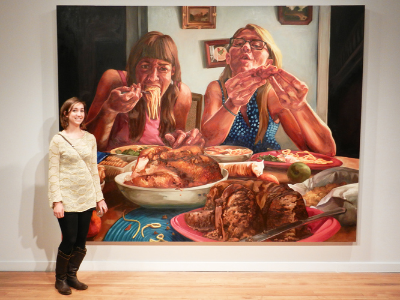

Biography
Alana Ferguson is a graduate student in the Masters of Arts, Teaching program at Maryland Institute College of Art. She graduated from Washington University in St. Louis with a Major in Painting, and Minors in Art History and Writing in 2012. When she is not making art, she enjoys reading The New Yorker magazine, listening to music, and cooking. She is inspired by Francis Bacon, Jenny Saville, Maria Lassnig, and many other artists. She currently lives in Baltimore, and is enjoying the city so far.